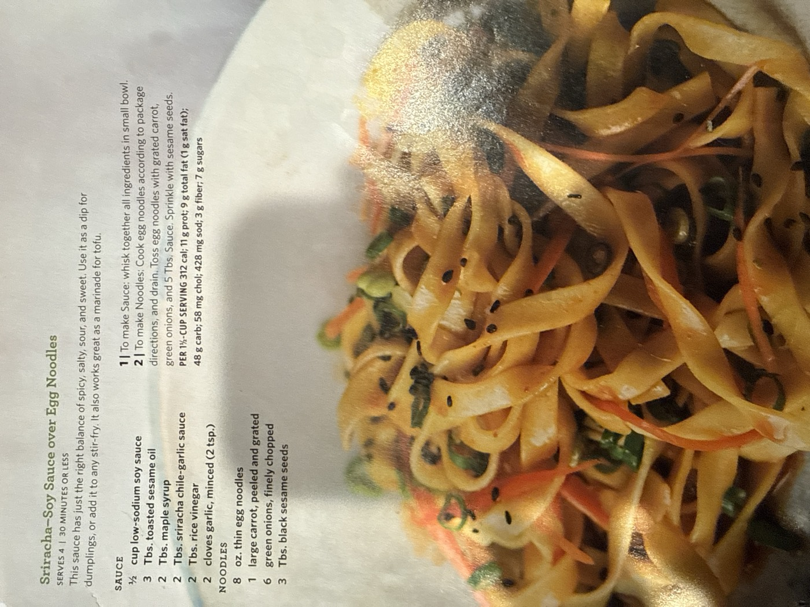

Sriracha-Soy Sauce over Egg Noodles

This sauce has just the right balance of spicy, salty, sour, and sweet. Use it as a dip for dumplings, or add it to any stir-fry — it also works great as a marinade for tofu. Here it's tossed with thin egg noodles, grated carrot, and scallions.
4servings
30 mintotal time
Vegetariandiet
Ingredients
Sauce
- ½ cup low-sodium soy sauce
- 3 tbsp toasted sesame oil
- 2 tbsp maple syrup
- 2 tbsp sriracha chile-garlic sauce
- 2 tbsp rice vinegar
- 2 cloves garlic, minced (2 tsp)
Noodles
- 8 oz thin egg noodles
- 1 large carrot, peeled and grated
- 6 green onions, finely chopped
- 3 tbsp black sesame seeds
Method
- Make the sauce. Whisk together all the sauce ingredients in a small bowl.
- Make the noodles. Cook the egg noodles according to package directions, and drain. Toss the noodles with the grated carrot, green onions, and 5 tbsp of the sauce. Sprinkle with the black sesame seeds.
Nutrition (per 1½-cup serving): 312 cal; 11 g prot; 9 g total fat (1 g sat fat); 48 g carb; 58 mg chol; 428 mg sod; 3 g fiber; 7 g sugars.
Extra sauce: the recipe makes more than the 5 tbsp used here — save the rest as a dumpling dip or stir-fry sauce.